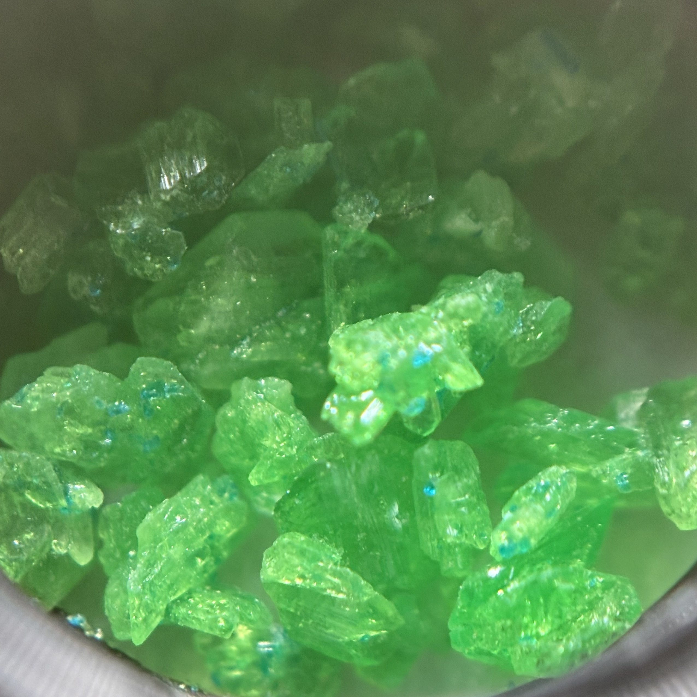

晶体化学指南
三草酸合铁(III)酸盐篇

图源：LX虫管吖Galvin
🎯 预览
项目概览：
难度等级：★★★★☆ (专家级)
培养周期：4-6周
成功率：40%
推荐人群：有丰富经验者
所需材料：
九水合硝酸铁/硫酸亚铁钾/硫酸铁铵
草酸钾/草酸钠
过氧化氢(草酸亚铁法)
玻璃培养皿或烧杯
蒸馏水、乙醇
过滤材料
一、基础认识
1.1 化学特性
化学式：K
3
[Fe(C
2
O
4
)
3
]·3H
2
O（钾盐）
外观特征
翠绿色透明晶体，具有明显的光敏性
溶解性
易溶于热水，微溶于冷水
晶系
单斜晶系，形态规整
1.2 结构特点
配位结构
铁(III)离子与三个草酸根离子形成八面体配位结构
光化学性质
具有明显的光敏性，光照下发生氧化还原反应
热稳定性
加热分解，最终产物为氧化铁
二、实验与制备
2.1 草酸亚铁法（产物较纯）
第一步：形成草酸亚铁
硫酸亚铁钾与草酸钾反应生成草酸亚铁沉淀
K
2
SO
4
·FeSO
4
+ K
2
C
2
O
4
→ FeC
2
O
4
↓ + K
2
SO
4
第二步：氧化反应
在过量草酸根存在下，用过氧化氢氧化草酸亚铁得到三草酸合铁(III)酸钾，同时生成氢氧化铁
2FeC
2
O
4
+ 3K
2
C
2
O
4
+ H
2
O
2
→ 2K
3
[Fe(C
2
O
4
)
3
] + 2Fe(OH)
3
第三步：转化配合物
加入适量草酸使氢氧化铁转化为三草酸合铁(III)酸钾配合物
2Fe(OH)
3
+ 3H
2
C
2
O
4
+ 3K
2
C
2
O
4
→ 2K
3
[Fe(C
2
O
4
)
3
] + 6H
2
O
第四步：析出结晶
加入乙醇降低溶解度，析出产物结晶
2.2 硝酸铁法（操作方便）
原料准备
九水合硝酸铁 4.04g，草酸钾 3.69g
溶解草酸钾
将草酸钾溶于10mL热水中，搅拌至完全溶解
溶解硝酸铁
将硝酸铁溶于10mL热水中，搅拌至完全溶解
混合溶液
将硝酸铁溶液缓慢加入草酸钾溶液中，搅拌混合直接得到三草酸合铁(III)酸钾溶液
2.3 硫酸铁铵法（结晶效果好）
原料准备
十二水合硫酸铁铵 4.82g，草酸钾 5.53g
溶解草酸钾
将草酸钾溶于15mL热水中，搅拌至完全溶解
溶解硫酸铁铵
将硫酸铁铵溶于15mL热水中，搅拌至完全溶解
混合溶液
将硫酸铁铵溶液缓慢加入草酸钾溶液中，搅拌混合生成三草酸合铁(III)酸钾溶液
过滤处理
过滤除去生成的硫酸铵和硫酸钾副产物，得到纯净的三草酸合铁(III)酸钾溶液
💡 方法优势：
硫酸铁铵价格相对便宜，易于获取
反应温和，副产物易于分离
适合培养较大尺寸的单晶
2.4 晶体生长
💡 避光结晶法
材料：三草酸合铁(III)酸盐溶液、培养皿、过滤材料、镊子
过滤处理
用滤纸过滤混合溶液，去除不溶性杂质
过滤过程需快速，避免溶液长时间暴露在光线下
避光静置
将过滤后的溶液转入培养皿，用铝箔包裹避光，静置2-3周
注意事项：
- 严格避光操作，防止光解
- 控制温度在20-25℃范围
- 避免震动和温度剧烈变化
晶体收集
用镊子小心取出晶体，快速吸干表面溶液
操作过程尽量在弱光环境下进行
💡 高级培养技巧
缓慢蒸发法
通过控制蒸发速率，在数周内缓慢结晶获得大单晶
温度梯度法
利用温度梯度控制晶体生长方向和速度
晶种培养
选择优质小晶体作为晶种进行悬挂培养
成品处理建议：
- 储存于棕色瓶中避光保存
- 避免长时间暴露在强光下
- 定期检查晶体状态，防止分解
详细操作参考
晶体保存篇
三、安全与注意事项
3.1 安全特性
毒性等级
低毒性，但草酸盐摄入有害
皮肤接触
可能引起轻微刺激，操作后及时洗手
吸入防护
避免吸入粉末，操作时建议佩戴口罩
3.2 特殊注意事项
光敏性：
严格避光操作，防止晶体分解
温度控制：
避免高温，防止热分解
废液处理：
草酸盐废液需专门处理，不可随意排放
储存条件：
棕色容器避光储存，标注警示标识
四、成果展示与质量评估
优质晶体特征
优质晶体：
颜色鲜艳，呈翠绿色
透明度高，内部无杂质
棱角分明，晶面平整
尺寸均匀，形态完整
问题晶体：
颜色变黄 - 光解产物
表面雾化 - 分解开始
畸形生长 - 条件不稳定
尺寸过小 - 浓度不足
五、问题诊断与解决
常见问题排查
问题一：晶体颜色异常
可能原因：
光照导致分解、杂质污染、氧化
解决方案：
严格避光操作，重新过滤溶液，使用高纯度原料
问题二：晶体生长缓慢
可能原因：
温度过低、浓度不足、蒸发过慢
解决方案：
提高环境温度至20-25℃，增加溶液浓度，适当通风
问题三：晶体分解
可能原因：
光照、温度过高、储存不当
解决方案：
立即转移至避光环境，控制储存温度，使用棕色容器
六、科学原理
6.1 配位化学
配位结构
铁(III)离子与三个草酸根形成八面体配位化合物
电荷平衡
三个钾离子平衡[Fe(C
2
O
4
)
3
]
3-
配离子的电荷
6.2 光化学性质
光氧化还原反应
光照下Fe
3+
被还原为Fe
2+
，草酸根被氧化
应用价值
这一性质使其在摄影和光化学研究中具有重要应用
七、应用领域
7.1 多领域应用
化学教育
配位化学和光化学教学的经典实验材料
摄影技术
早期蓝晒法和摄影工艺的重要化学品
分析化学
作为氧化还原滴定中的指示剂
材料科学
制备纳米材料和功能材料的前驱体
八、历史与发展
8.1 研究历程
早期发现
19世纪中期被发现并研究其光化学性质
应用发展
在摄影技术和化学教育中广泛应用
现代研究
在材料科学和纳米技术中的新应用探索
内容导航
基础认识
实验制备
安全事项
质量评估
问题诊断
科学原理
应用领域
历史发展
返回首页